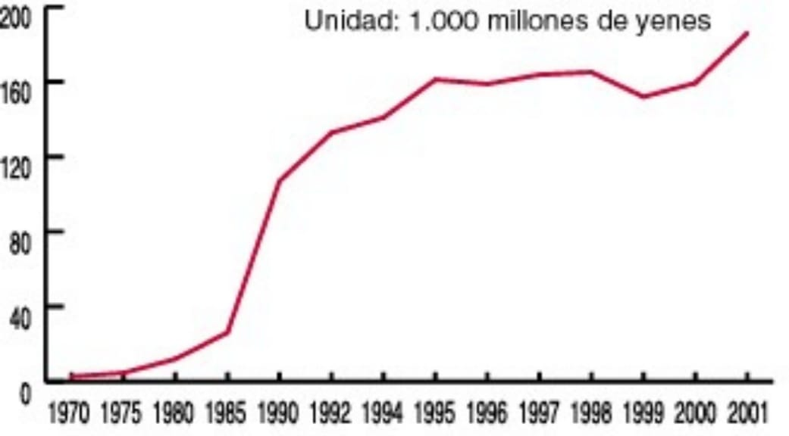

CONOCIMIENTO ANIME
EXPERTOS DEL ANIME
CONSUMIDORES DE ANIME.
Previous Next
expresión de la posmodernidad
si queremos pensar a la cultura japonesa contemporánea, no podemos ignorar a la cultura otaku. Aun más, lo que constituye en esencia a nuestra época se manifiesta de manera particularmente clara en esta cultura juvenil en perpetuo crecimiento desde los años 80´en Japón. Este fenómeno representa hoy día un mercado colosal y se extiende con rapidez al resto del mundo. En el presente trabajo se comienza por exponer la magnitud del fenómeno a nivel comercial. Posteriormente explicamos que lo que constituye en esencia a las denominadas estructuras posmodernas de la sociedad actual, se observa claramente en esta cultura. Finalmente, explicamos los factores sociales que subyacen en el otakismo japonés.
Palabras clave: cultura, juventud, otaku, posmodernidad, Japón (tomadas del Diccionario de la Real Academia Española:http://www.rae.es/rae.html
Los otakus son en su gran mayoría jóvenes, aficionados al manga, al anime y/o a los juegos de video, que tienden a convivir entre ellos y para consumir estos productos culturales y sus derivados. Este fenómeno, en perpetuo crecimiento desde los años 80´en Japón, representa hoy día un mercado colosal y se extiende con rapidez al resto del mundo. No obstante, estos adolescentes siempre han sido considerados, por el resto de la sociedad japonesa, como desadaptados y autistas, jóvenes que se evaden y rechazan el contacto con un mundo de control y que a la vez refutan la contestación. A menudo son juzgados como los causantes de los disturbios y crímenes perpetuados en el país. Según Iwabuchi (2002), la cultura popular japonesa a través de sus dibujos animados y juegos de video se encuentra en el origen de una globalización cultural y desplaza el centro de la dominación cultural americana hacia Asia. Algunos autores como Azuma (2008) plantean una estrecha relación entre la cultura otaku y la posmodernidad. Pérdida de referencias, fin de los grandes relatos, difuminación de la frontera entre autor y consumidor, entre el original y su copia: Azuma plantea que la cultura otaku es la primera cultura posmoderna. Por su parte, Kinsella (2000) atribuye el fenómeno al individualismo excesivo de la sociedad contemporánea que desdibuja los puntos de referencia sociales, particularmente los de la identidad sexual, desde el momento en que los jóvenes ya no aceptan los roles de género derivados de la cultura tradicional. El mundo de los mangas y animes abre un espacio de libertad, autoriza la desobediencia, las debilidades y los placeres, mientras que la sociedad japonesa constriñe a los adolescentes al éxito escolar y a un destino delimitado. Reducir esta cultura al Japón sería un error pues existen otakus entre muchos jóvenes del resto del mundo. Además de la gran actividad económica generada por el manga y sus derivados, constituye un medio de satisfacción de las necesidades psicológicas fundamentales como lo afirma Allison (2006), ya que una de sus características más notables es su diversidad y su segmentación. Si el anime encuentra tanto éxito popular en el mundo entre los jóvenes es porque, además de las estrategias de mercado implementadas, satisface sus ganas de evadirse en un mundo cada vez más individualista y competitivo, y les permite pensar que pertenecen a un grupo de pares que comparten una pasión hermética para el mundo de los adultos con los que ya no se sienten identificados. En un mundo en crisis económica, donde los valores y relaciones entre las generaciones y entre los géneros son cuestionados, estos productos culturales parecieran ser instrumentos de socialización y vehículos de crítica social. A pesar de la importancia del fenómeno, ha sido muy poco estudiado en América Latina: pocos investigadores han analizado seriamente las obras preferidas de estos jóvenes y su manera de consumirlas. Es por tanto importante explorar esta realidad para entender a una parte de la juventud mundial actual, y también para comprender uno de los efectos de la globalización en su aspecto cultural. Cabe señalar que entendemos al término cultura en el sentido que le da Tomlinson (2001, p. 18), es decir, las prácticas comunes que enriquecen directamente el anecdotario de vida: las historias por las que interpretamos cronológicamente nuestra existencia en lo que Heidegger llama la proyección de la situación humana. Nos referimos al orden de vida en que los seres humanos conferimos significados a través de la representación simbólica, tomando en cuenta que la significación e interpretación culturales nos orientan constantemente, en lo individual y lo colectivo, hacia los actos particulares. En este sentido, ni siquiera los actos instrumentales más básicos, como satisfacer las necesidades corporales están fuera de la cultura. La tesis principal de Tomlinson es que no es posible interpretar los enormes procesos de globalización hasta que sean comprendidos a través del vocabulario conceptual de la cultura, tesis que compartimos y que nos resulta de gran utilidad dado que lo que nos interesa analizar es cómo altera la globalización el contexto de construcción de significados, o sea, cómo influye en el sentido de identidad de las personas, la experiencia de lugar y del yo respecto al lugar, cuál es su efecto en las interpretaciones, valores, deseos, mitos, esperanzas y temores compartidos que han surgido alrededor de la vida localmente situada. Por consiguiente, la dimensión cultural de la globalización o lo que Anthony Giddens (1997) llamó externalidad e internalidad de la globalización, es decir, la conexión entre las inmensas transformaciones sistémicas y las transformaciones de nuestros “mundos” más locales e íntimos de experiencia cotidiana. Sin embargo, antes de conocer a qué necesidades y deseos obedece el consumo de estos productos en los jóvenes otakus latinoamericanos y, por lo tanto, de qué manera es apropiado un producto cultural japonés por una sociedad de tradiciones y cultura diferentes, es importante entender, a partir de la literatura existente, los elementos que subyacen en la apropiación de estos productos por parte de los jóvenes japoneses. El presente artículo se abocará a ello. Otaku deriva de un término japonés utilizado para nombrar a una casa o familia (お宅, otaku) y también es usado como pronombre honorífico de segunda persona. Apareció en el registro coloquial moderno en los años ochenta. En la jerga moderna del Japón, el término otaku se refiere a un fan de cualquier tema en particular. Los Otakus fuera de Japón centran sus intereses en el manga y anime pero también se expanden a otros gustos como los videojuegos. Manga es la palabra japonesa para designar a la historieta en general. Fuera de Japón se utiliza exclusivamente para referirse a las historietas niponas. Anime es el término que identifica a los dibujos animados de procedencia japonesa.
Ilustrada principalmente por el manga y los animes, la cultura otaku en Japón no es menor. En un estudio realizado en 2004, el número total de otakus japoneses se estimaba en 2.85 millones, con un mercado de 290 billones de yenes (Kitobayashi, 2004). Un ejemplo de la magnitud de esta industria nipona, si observamos los datos publicados en el 2002 por la Asociación Japonesa de Comercio Exterior, vemos que los ingresos obtenidos por la producción japonesa de animación de 1970 a 2001, crecieron de manera exponencial en treinta años (ver gráfica 1):
Gráfica 1 Ingresos obtenidos por la industria japonesa de animación (Sólo filmes, vídeos y producciones)

Fuente: Asociación Japonesa de Comercio Exterior, 2002 De acuerdo con la misma fuente, el número de creadores de anime en Japón en el 2001 era de 3.567; el número de empresas productoras japonesas de anime en el mismo año era de 247; los ingresos provenientes del anime japonés en los Estados Unidos US $ 4.359.110.000, cifras que reflejan lo que representa el fenómeno en Japón y en el resto del mundo. Esto se observa también en los ingresos de Toei Animation, una de las principales industrias japonesas de animación, procedentes de ventas de productos de anime en Japón y en el exterior (ver cuadro 1)
| año | exterior | Japón |
|---|---|---|
| 1999 | 1,561 | 8,233 |
| 2000 | 5,452 | 9,393 |
| 2001 | 5,452 | 8,876 |
| 2002 | 6,253 | 11,442 |
FUENTES: Asociación Japonesa de Comercio Exterior, 2002 El financiamiento para la industria del anime se ha ido diversificando. Anteriormente, era muy difícil conseguir un respaldo financiero, debido a que se consideraba que contenidos como el anime no ofrecían ningún tipo de garantías. No obstante, en el 2004, Gonzo, Japan Digital Contents, Rakuten Securities, y JET Securities crearon el primer fondo para el anime. Por otra parte, en el 2005, Japan Digital Contents y la Organización para la Pequeña y Mediana Empresa y la Innovación Regional, una agencia gubernamental independiente, dieron 500 millones de yenes cada uno para financiar un fondo destinado a la producción de contenidos. Con respecto a los mangas, son un verdadero fenómeno de masas en Japón. De acuerdo a Papalini (2006, p.34), su costo ronda los tres dólares y la tirada de estas revistas es variable pero, para tener una idea de la magnitud de este consumo cultural tan generalizado, puede verse este ejemplo: la revista Shonen Jump nació en 1968 con una tirada semanal de 100 000 ejemplares. En 1984 ya rondaba los 4 millones de ejemplares y en 1991 su creciente tirada se había estabilizado en una cifra un poco superior a los 6 millones de ejemplares. Las industrias niponas del manga y animé trabajan estrechamente con las empresas de videojuegos, de estudios de cine, musicales, editoriales y de merchandising. Un ejemplo de esta sinergia lo constituye el anime Ranma ½: se publicó como manga de 1987 a 1996. Luego se adaptó a anime, televisándose entre 1989 y 1992. Entre 1993 y 2008 se produjeron dos largometrajes que también se distribuyeron en DVD. Se crearon trece videojuegos. Se formó un grupo musical llamado DoCo con las principales voces femeninas que hicieron dos discos y también se editó su versión karaoke. De la serie se produjeron tres original soundtracks y dos álbumes más para la música y las canciones de las películas. Se editó un álbum con la música de uno de los videojuegos. En total se editaron dieciséis álbumes. También se han producido toneladas de merchandising oficial: muñecos de peluche, llaveros, figuras o maquetas, zapatos, camisetas, tazas, etcétera Además de la asistencia de los actores de voz y de su creadora Rumiko Takahashi en incontables convenciones y eventos de animación japonesa. Por último, como lo señala Azuma (2008, p.14), son los otakus los que construyeron las bases de la cultura internet japonesa que comenzaba a desarrollarse en los años 1980. No sólo los sitios o anuncios otakus son numerosos en la red, sino también los nombres atribuidos a los sitios FTP de los proveedores de acceso a menudo tienen el apelativo de personajes de anime. Por consiguiente, si queremos pensar a la cultura japonesa contemporánea, no podemos ignorar a la cultura otaku. De hecho, según dicho autor, lo que constituye en esencia a nuestra época se manifiesta de manera particularmente clara en la cultura otaku FTP (File Transfer Protocol) es un protocolo de transferencia de ficheros entre sistemas conectados a una red TCP basado en la arquitectura cliente-servidor, de manera que desde un equipo cliente se puede uno conectar a un servidor para descargar ficheros desde él o para enviar archivos propios independientemente del sistema operativo utilizado en cada equipo.
Diversos autores encuentran una estrecha relación entre la cultura otaku y las estructuras denominadas posmodernas de la sociedad. Esto se debe, en primer lugar, a la existencia de “creaciones derivadas”, es decir, diversos productos como las revistas, los juegos o las figuras, que son una reinterpretación de obras originales (mangas, animes o juegos electrónicos) [1]. Esta particularidad es típicamente posmoderna en el sentido que le da Baudrillard (1985) a la evolución de la industria cultural. Este filósofo francés predijo que en las sociedades posmodernas la diferenciación entre el original y la copia se esfumarían y que dominaría otra forma de obra o producto que no sería ni el original ni su copia, sino lo que él llamó un “simulacro”. Este fenómeno es característico en la cultura otaku ya que, además de las revistas que crean y venden los amateurs, también las obras originales están constituidas a menudo por dibujos y citas de obras anteriores. Por lo tanto, desde un principio, muchas obras y productos son simulacros de obras preexistentes y ya no constituyen una creación de un artista definido sino un simulacro de simulacros. De hecho, en los años noventas el mercado formó un nuevo tipo de consumidores que consideran por igual a las obras originales y a sus derivados ya que no es más la historia la que da vida a los personajes, sino los personajes los que dan vida a la historia a través de diversos juegos, figuras, objetos, etcétera. Para volver a los personajes lo más atractivos posibles, se desarrolló una técnica de elementos de atracción con un registro de bases de datos de estos elementos. Así, lo que en realidad atrae a los otakus en la actualidad son los personajes y los elementos de atracción, más que la calidad del relato. El proceso se desarrolla de la siguiente manera: los otakus comienzan por consumir una obra que les gusta o conmueve. Sin embargo esta obra es un simulacro en el que los únicos elementos sentidos como sustanciales son los personajes. Esto provoca que los otakus tiendan a consumir todos los productos de los personajes por los que sienten una atracción. Pero en realidad estos personajes son también simulacros creados a partir de bases de datos de elementos de atracción. Un ejemplo de esto lo constituyen las tiendas especializadas de Akihabara o de Shinjuku, barrios de Tokio reconocidos por la abundancia de sus productos electrónicos y sus derivados. Los “personajes” que ahí se comercializan no tienen una apariencia propia y única creada por un dibujante. Son más bien conjuntos de elementos enlistados: cada producto es el resultado de una estrategia comercial. Para realizar esta estrategia existen motores de búsqueda como Otaku Tinamiwww.tinami.com creado en 1996 que tiene un repertorio clasificado de las particularidades gráficas de los productos. De acuerdo con Azuma (2008, p. 88), los otakus japoneses perdieron los grandes relatos en los setentas; en los ochentas reinventaron estos grandes relatos pero, en los noventas con el desarrollo de internet y de las técnicas de animación, perdieron incluso la ficción para terminar consumiendo bases de datos. En este sentido podemos afirmar que el ocaso de los grandes relatos se debió a cambios sociales e ideológicos mientras que la generalización de los simulacros fue una transformación impulsada por los progresos técnicos. En los ochentas se podían citar numerosos autores de mangas y de animes. En cambio en los noventas el autor desaparece suplantado por los elementos de atracción como las “orejas de gato”, los delantales, los sombreros pequeños, o el suspenso, el amor, etcétera Los individuos que sienten una atracción (llamada moé[2]) por un personaje particular coleccionan todos los productos relacionados con él. Y este fenómeno se extiende al resto del mundo. Lo que se busca ya no es la tradicional fuerza del relato, ni una representación del mundo, ni un mensaje particular, sino la mejor ecuación posible que combine elementos de atracción susceptibles de provocar reacciones emocionales. Los otakus buscan una combinación de elementos de atracción que les aporte lo más eficazmente posible una satisfacción emocional. Consumen, uno tras otro, nuevos productos que luego desechan. Por esta razón, si un nuevo elemento de atracción es descubierto, la mayoría de los personajes o historias lo integran inmediatamente lo que trae consigo la aparición de un número importante de producciones parecidas. Con la caída de los grandes relatos, los individuos, al no poder darle un sentido al mundo, sólo pueden acumular elementos sobre los cuales proyectar sus emociones. A los otakus del sexo masculino les gustan las referencias del tipo lolicon (contracción de las palabras en inglés Lolita y complex). Las de sexo femenino, por su parte, aprecian el género yaoi que se ocupa de personajes masculinos homosexuales. En este sentido, los otakus japoneses muestran una extraña duplicidad con respecto a la sexualidad: a la vez que consumen de manera regular imágenes “perversas”, son conservadores en su vida social (Azuma, 2008). Otra característica por la que se asocia a la cultura otaku con la posmodernidad es por la tendencia de los otakus a valorar lo imaginario por encima de la realidad. No se trata tan sólo de un simple gusto o inclinación, sino una forma particular de comportamiento. Las relaciones interpersonales de los otakus son independientes de las relaciones en la familia o en el trabajo. Generalmente, estas relaciones se rigen por principios de otro tipo, centradas en el mundo imaginario de los dibujos animados o de los videojuegos (Azuma, 2008). Es por esta característica que el fenómeno otaku es visto como una manera de huir de la realidad. Sin embargo, si optan por la ficción no es porque no la distingan de la realidad social, sino porque es lo que mejor opera en sus relaciones interpersonales. Se trata de la afirmación de la identidad en relación con un territorio al que pertenecen y del cual dependen (Aoyagi, 2005). De acuerdo con Osawa (1995), uno de los primeros sociólogos que estudiaron el fenómeno otaku, una de sus características consiste en tratar de llenar el vacío que acompañó a la desaparición de los grandes relatos con esta subcultura: sin ilusión sobre el valor o los modelos de las obras otakus, no tratan de encontrarles el sentido ni de activar una acción social. Sólo buscan afirmar su yo (un yo puramente formal) en cuanto espectadores, eligiendo un personaje de alguna serie, manga o videojuego, o algún ídolo (actor o cantante) y convirtiéndose en el “fan de”. No saben cómo expresar su malestar existencial. En este sentido, los otakus simbolizan este malestar encerrándose en un mundo virtual en el que pueden ser héroes. Más que mantener relaciones humanas complejas, fundadas en el deseo del otro, prefieren la facilidad de la relación con productos adaptados a sus gustos, con elementos de atracción seleccionados por ellos. Esto no quiere decir que algunos de ellos no tengan vida social. De hecho, mantienen contacto con los otros por medio de los chats en internet, los blogs y las exposiciones-venta de productos. En este sentido, los otakus posmodernos tienen deseos y tendencias gregarias, pero las llevan a cabo de una manera diferente a la de los hombres modernos: como ya lo mencionamos, sienten más atracción por la ficción que por la realidad y la mayoría de sus relaciones consisten en un intercambio de informaciones sobre productos, ídolos, etcétera. En este sentido, de acuerdo con Miyadai (1998) la mayoría de sus relaciones no se sostienen por necesidades ligadas a lo real, como la familia o los grupos sociales que los rodean, sino por el interés que representa la obtención de algunas informaciones. Al mismo tiempo, tienen toda la libertad de terminar en cualquier momento con sus comunicaciones[3]. Cabe señalar que esta libertad de “desconectarse” caracteriza no sólo a la cultura otaku sino también a la sociedad actual. De acuerdo con este sociólogo japonés este fenómeno se debe a que el Japón actual se ha vuelto extremadamente práctico desde el punto de vista de la satisfacción de las necesidades y esta forma de relación de los otakus nació de su adaptación a este tipo de sociedad. Como las relaciones con lo real no imponen relaciones directas con los demás, vemos aparecer un nuevo tipo de relación con el otro, ya no basada en la necesidad, sino únicamente en la voluntad individual. Viven en un universo cada vez más global, sobre-mediatizado, en paz e inundado por las altas tecnologías. Su afición es un intento más por contactarse con su mundo y encontrar sus puntos de referencia. Podríamos decir que el otaku concretiza la emergencia de una cultura de la que Japón es el centro. Los jóvenes de nuestras sociedades postindustriales sienten la necesidad de huir de la oscura realidad del desempleo y de la exclusión o, en el caso de los jóvenes japoneses, de escapar de una existencia muy trazada desde que son pequeños. En este sentido, cabe señalar que en los estudios sobre la cultura otaku es necesario tomar en cuenta no sólo los productos presentados por el sector comercial profesional, sino también los productos derivados surgidos del sector “amateur”. Moé es una palabra del argot japonés que originalmente se refiere a un fetiche por los personajes de videojuegos, anime o manga. Por ejemplo, meganekko-moé, “moé de chicas de gafas”, describe a una persona que se siente atraída por personajes ficticios que usan gafas. Los rasgos moé más comunes suelen ser aquellos relacionados con las emociones. “The world according to the teenagers in Japan: The other side of Enjo-Kosai”. Compass Online, The Yearly Magazine of Student Writing in English. 1998-1999.
4. Factores sociales que subyacen en el otakismo japonés La aparición de los otakus en Japón no puede disociarse de los excesos del sistema educativo del país. Tanto la familia como la sociedad en general, valoran mucho la educación por lo que, desde su nacimiento, el niño entra en una espiral educativa de la que saldrá probablemente tiempo después de su madurez. A lo largo de este proceso educativo recibirá también los valores que lo formarán como “japonés”. La que velará para que el niño cumpla con este proceso, es la madre. En efecto, mientras que en otras culturas existen nanas, guarderías o niñeras, los bebés japoneses cuentan con una madre disponible para ellos durante los cinco primeros años de su vida. Es raro que las mujeres retomen inmediatamente después del parto su actividad profesional y hay pocas guarderías en el país. Desde su nacimiento, la estructura familiar se centra en torno al niño-rey que, desde los noventa, generalmente es hijo único[1]. Los padres, por su lado, ausentes durante todo el día y muchas veces inexistentes durante los fines de semana, se enfocan en proveer mensualmente un salario que le permita vivir a la familia. Voluntariamente le delegan a la madre su rol pedagógico. Dado que en Japón, el factor más importante de éxito social es la escolaridad, las así llamadas kyoiku-mama (mamá educación), se enfoca en la vigilancia de los estudios de su hijo para que sea admitido en las mejores universidades. Atrapado en la red de un chantaje afectivo, el niño no tiene otra opción que la de someterse a la voluntad materna. Otra característica de la sociedad japonesa es la predominancia del grupo por encima del individuo. Esta característica proviene de la cultura rural de este país donde el cultivo de arroz requiere de esfuerzos intensivos y delicados que involucran a la comunidad (Ito, 2005). Este dominio del grupo se reconoce también en la estructura gramatical del idioma que cuenta con distintos “yo”. “Yo” no se afirma en cuanto tal sino que se determina en función de su interlocutor. Constantemente, el sujeto debe entonces recomponer la afirmación de su identidad en función de si se dirige a un superior, a compañeros de trabajo o a amigos y familiares. Este ejercicio relacional es un indicio de la propensión de los japoneses a concebirse no como individuos definidos, dotados de una personalidad afirmada en un sentido profundo, sino como individuos adaptables en función de un medio social. Así, en esta sociedad matriarcal y grupal, las personas no buscan una independencia como la concebimos en occidente, sino la relación de dependencia ideal que les permita ser aprobado por la madre y luego por el grupo. De acuerdo con el Dr. Takahashi, los dos problemas más frecuentes que enfrenta en sus pacientes son, por un lado, la propensión a negarse como individuos para fundirse con un grupo y, por el otro, una oposición excesiva hacia el grupo para conseguir una afirmación exacerbada de su individualidad (Ito, 2005). Después de la madre y la familia, el primer grupo al que se confronta un niño japonés es la escuela cuyo ideal educativo son el patriotismo y el nacionalismo. Desde principios de los años noventa, en todas las ceremonias oficiales de las primarias, secundarias y preparatorias se iza la bandera junto con el himno nacional. Los alumnos deben llevar un uniforme y cierto corte de pelo con el fin de reforzar el sentimiento de orgullo y pertenencia al grupo y a la vez borrar las diferencias de clases sociales. Según cada institución escolar, se fijan las reglas de vestir estableciéndose incluso, en algunas, la altura reglamentaria de las faldas y el color permitido de los broches para el cabello. Además, desde su temprana infancia, el niño japonés aprende que la escuela es un bien común que hay que respetar. Los alumnos limpian todos los días sus salones de clase, los pasillos y patios de recreo. Asimismo, las instalaciones permanecen abiertas hasta tarde para que los estudiantes organicen clubes sociales, dirigidos por ellos mismos y donde todos aprenden más reglas de grupo. Sin embargo, junto a este aprendizaje que fortalece la vida de grupo, existe una feroz competencia escolar ya que, a raíz de los exámenes de admisión, se efectúa un reparto de los alumnos en función de sus resultados. Los estudiantes mejor clasificados irán a las escuelas más reputadas ya que las secundarias y preparatorias niponas están catalogadas jerárquicamente. Esto provoca que los japoneses efectúen estudios cada vez más largos pues el único criterio de reclutamiento de las empresas es la excelencia académica. Así, con el fin de aspirar a un buen curriculum vitae, 41% de los escolares de primaria, 66% de secundaria y 41% de preparatoria, asisten a cursos privados llamados juku (Barral, 1999). En estos centros, revisan el programa escolar, realizan ejercicios y aprenden técnicas de respuesta para los exámenes. A pesar de la carga extraordinaria que los juku representan para los alumnos, ellos mismos lo piden a sus padres pues es difícil para ellos escapar de la presión de sus compañeros. Este sentido de competencia se agudiza con el hensachi, un sistema de evaluación de los resultados escolares a nivel nacional que se calcula para cada estudiante en función de un examen estandarizado mensual que circula en todas las escuelas, privadas o públicas. Este método de evaluación permanente, además de instaurar un profundo sentimiento de rivalidad en los niños, no les reconoce más que la excelencia escolar como valoración de sí mismos. Uno más de los efectos del aprendizaje escolar en los jóvenes otakus japoneses se aprecia en su obsesión por la clasificación y el saber enciclopédico. Su propensión a acumular, clasificar, coleccionar o codificar es una extensión del tipo de educación que reciben. Otro mecanismo que señala el Dr. Masao (2001) para forzar al individuo a aceptar la lógica del grupo en Japón es el ijime (acoso, maltrato). Incluso muchos profesores consideran a este fenómeno como un rito de iniciación adolescente necesario para la estructuración psíquica de los estudiantes y no intervienen a menos que algún niño llegue a suicidarse por no soportar el constante maltrato de sus compañeros. En una encuesta hecha a 990 preparatorianos, el 53% declaró haber sido víctima de ijime. Cualquier estudiante que presente facilidad para el aprendizaje o, por el contrario, tenga un rendimiento bajo, es una víctima potencial y los líderes de la escuela se apoyan en la mayoría silenciosa para poner castigar a los que no corresponden a la norma. Un alumno de cada sesenta rehúsa cada año asistir a la escuela por el ijime (Masao, 2001). Otros se refugian en una burbuja imaginaria que los protege de sus torturadores: son los otakus. Esta afirmación la confirma Risaku, un joven japonés de 15 años, cuando dice: “me gustan los monstruos porque en las películas su poder destructor reduce a la ciudad y a la sociedad a la nada, y me hubiera gustado que acabaran con mi escuela, con mi entorno. Como yo, son parias de la sociedad pero su fuerza les permite destruirlo todo (…) En el liceo tenía un amigo que pasó por el mismo sufrimiento que yo. A él fueron las sectas las que le permitieron encontrar una razón para vivir (…) ¿Para qué respetar las convenciones de un mundo en el que uno no es reconocido? Me encuentro mejor en mi burbuja imaginaria” (Barral, 1999). Sin embargo, a pesar de la sensación de libertad que muchos otakus dicen experimentar, en realidad los medios de comunicación son los que le dictan a los consumidores lo que es bueno y lo que deben pensar. Los japoneses se han vuelto devoradores de información y no saber se ha convertido en una vergüenza. Los medios son los que transmiten las informaciones indispensables para mantenerse en el nivel, estar a la altura de la conversación y asegurarse así un lugar en la sociedad. De hecho, 99% de los hogares japoneses tienen televisión. Además, desde finales de los años setenta, la disminución del número de niños por familia, la prosperidad económica y el acento puesto en la competencia escolar, han vuelto posible el derecho a un cuarto propio para los niños con una televisión individual. Encerrados en sus recámaras, los jóvenes han adquirido su independencia mediática. Asimismo, con la escuela y el juku, los estudiantes no tienen tiempo para salir con sus compañeros y pasan su tiempo libre frente a la televisión. 70% de los jóvenes de sexo masculino entre diez y treinta años consideran a la televisión indispensable para su existencia, 44% estiman que el teléfono les es vital y sólo 36% de estos mismos jóvenes juzgan esenciales las conversaciones con sus padres o amigos. Entre las mujeres del mismo rango de edad, los porcentajes son respectivamente 71%, 66% y 62% (Barral, 1999). Las principales cadenas de televisión difunden animes y emisiones especiales consagradas a los temas musicales de los mismos. La dureza de las autoridades japonesas ha siempre impedido el desarrollo de una cultura de las drogas y los jóvenes se vuelcan hacia la televisión para soñar (Ito, 2005). A diferencia de los que consideran que la información debe ser compartida por todos, el otaku se especializa en la información que no le interesa a nadie con el fin de poder presumir ser el mejor especialista del mundo que acaba de aparecer. Ser reconocido como tal por sus pares, le otorga prestigio al interior de la comunidad otaku. Otro factor importante que subyace en el consumo de los otakus, es el mercado. Una vez reconocidos como consumidores de alto potencial, los otakus se han convertido en el objetivo de muchas empresas ya que viven para satisfacer su pasión y están dispuestos a invertir todos sus ahorros en el objeto de su deseo. Es el caso de Mandarake, la librería de mangas de ocasión fundada en 1982 y cuyas ganancias aumentan 20% cada año. Dentro de sus seiscientos metros cuadrados, ofrece series completas de mangas y de fanzines. Mandarake incita a sus empleados a venir a trabajar en cosplay, ofreciéndoles un salario mayor. Además, dentro de la tienda se escucha la música de los animés o las canciones popularizadas por los ídolos. Igualmente, un sector está consagrado a los garaje-kits y otro a los álbumes de fotos de los idoles. Inspirados por Mandarake, otras boutiques especializadas en la cultura otaku han aparecido a lo largo de los años noventa, como Messe Sanoh, una cadena de boutiques de Akihabara (el barrio de la electrónica de Tokio), o Broccoli que ya cuenta con cinco sucursales en los dos años que lleva de existencia. Asimismo, la industria del sexo se ha dirigido a los otakus. Un ejemplo de ello es la “Santa Academia del cosplay” donde las jóvenes prostitutas usan cosplay y le permiten a los otakus vivir su sueño: tener relaciones sexuales con el personaje de animé o de videojuego favorito. Muchas de ellas son otakus también. Numerosos jóvenes de todo el mundo se dicen otakus y están influenciados por esta cultura nipona que se extiende hacia Asia y Occidente. Al igual que los jóvenes japoneses se evaden de la rutina escolar y de los problemas de su entorno social por medio de los mangas, animes o videojuegos, los jóvenes franceses, estadounidenses, taiwaneses, mexicanos, etcétera, se vuelven cada vez más adeptos a estos productos exportados por los japoneses. En Francia, por ejemplo, desde los años ochenta han sido difundidas al menos 150 series de “japanimation” en las cadenas de televisión. En Italia, los adolescentes se apasionan por la realización de mangas y envían sus contribuciones a los principales editores japoneses, esperando ser tomados en cuenta. Asimismo, internet cuenta con miles de sitios que hablan de las últimas tendencias en la animación o juegos de video nipones, y algunos sitios japoneses ya venden por esa vía artículos destinados a los otakus del mundo. Estamos frente a un fenómeno que hace tiempo que ya ha desbordado sus propias fronteras, olvidando de paso sus propios orígenes Desde los 90 la tasa de natalidad en Japón ha descendido considerablemente por el elevado costo de la educación de un hijo: se estima en más de un millón de euros entre su nacimiento y su madurez.